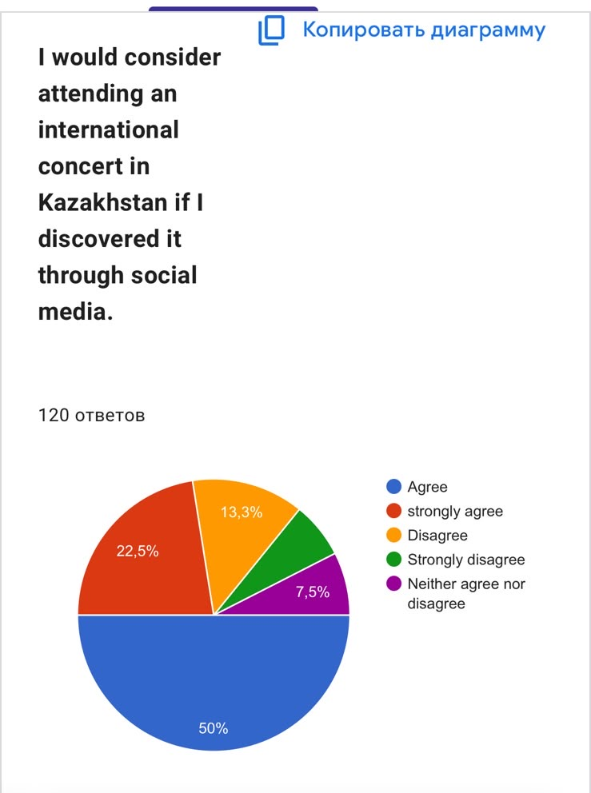

The Impact of Social Media Marketing on Generation Z's Intention to Attend International Concerts in Kazakhstan
Abstract
This study examines how social media marketing influences Generation Z’s intention to attend international concerts in Kazakhstan. Using survey data from 120 respondents, the research explores how social media advertising, content, and engagement affect young people’s interest in attending international concerts and their purchasing decisions.
Research
Business and Economics
06.10.2026
English
Abstract
Social media has become a major channel through which young audiences discover concerts, artists, and entertainment events. This study examines the relationship between social media marketing and Generation Z's stated intention to attend international concerts in Kazakhstan. A quantitative descriptive survey was administered through Google Forms and collected 120 responses on social media use, exposure to concert advertising, influencer recommendations, user-generated content, and attendance intentions. An industry interview with event professional Dmitry Li was also used to provide contextual insight into current promotional practices. Results show that 72.5% of respondents would consider attending an international concert in Kazakhstan if they discovered it through social media, 70.0% reported that social media marketing increases their intention to attend, and 72.5% indicated willingness to buy a ticket after seeing convincing promotional content. Reviews and comments from other users produced the highest combined agreement rate at 73.3%. Respondents also identified influencer recommendations, concert videos, and ticket discounts as persuasive content types, while social media promotion was the most frequently selected single factor influencing concert decisions. These findings suggest that social media is an important promotional environment for international concerts among the surveyed group. However, the study measures self-reported intentions rather than verified ticket purchases or attendance, and the sample is geographically concentrated in Almaty. Future research should use broader samples and behavioral data to test whether reported intentions translate into actual attendance.
Keywords: social media marketing, Generation Z, concert attendance, influencer marketing, event marketing, Kazakhstan
Introduction
Social media has changed how young audiences discover products, entertainment, and cultural events. Instead of relying primarily on posters, radio advertising, or word of mouth, audiences can encounter concert announcements through short-form video, artist posts, creator recommendations, and user-generated content on platforms such as Instagram, TikTok, YouTube, and Snapchat. For Generation Z, these platforms function not only as communication channels but also as spaces where advertising, peer opinion, and entertainment content overlap.
Prior research links social media marketing with consumer awareness, engagement, and purchase intention. Emini and Zeqiri (2021) found that brand awareness and engagement mediated the relationship between social media marketing and purchase intention in a transition economy. Waworuntu et al. (2022) similarly connected social media marketing with brand image and Generation Z purchase intention. Research across emerging economies also indicates that social media marketing can affect brand awareness, engagement, and purchase intention, although effects can differ across national contexts (Zeqiri et al., 2025).
Influencer marketing adds a social-credibility dimension. Babu et al. (2024) examined influencer credibility, social presence, inspiration, and parasocial interaction in relation to Generation Z purchase intention. Duffett and Mxunyelwa (2025) studied Instagram mega-influencers through technology-acceptance and source-credibility frameworks, while Muthulingam and Amirtharaj (2026) modeled the effects of influencer characteristics, content, trust, and engagement on Generation Z purchase intention.
Comparable effects have also been studied in live cultural attendance. Chen and Zhao (2025) reported that transmedia storytelling, fan-economy dynamics, and social media marketing were associated with younger audiences' curiosity and intention to attend theater performances in China. Less is known about international concert attendance in Kazakhstan. This study therefore asks how young social media users discover concerts, how advertising and influencer promotion relate to attendance interest, which content types respondents find most persuasive, and whether respondents report that social media marketing affects their intention to attend. The goal is descriptive rather than causal: the study evaluates reported perceptions and intentions, not whether social media exposure directly causes ticket purchases.
Materials and methods
This quantitative descriptive study used an online questionnaire created in Google Forms. The instrument covered demographics, social media habits, attitudes toward social media marketing, influencer credibility and user-generated content, and intention to attend international concerts. Most attitudinal items used a five-point Likert scale from strongly disagree to strongly agree; multiple-choice items assessed preferred promotional content and factors influencing concert decisions. A total of 120 respondents completed the questionnaire.
Analysis was limited to descriptive statistics, primarily response percentages. Accordingly, the results represent what respondents report thinking or intending and should not be interpreted as evidence that social media marketing causes attendance. The sample was concentrated in Almaty (53.3%), followed by respondents from outside Kazakhstan (14.2%), other cities in Kazakhstan (13.3%), Shymkent (10.0%), and Astana (9.2%). Participants aged 16-18 formed the largest age group (63.3%), followed by ages 19-21 (15.8%), 11-13 (13.3%), and 13-15 (7.5%).
A semi-structured interview with event-industry professional Dmitry Li provided contextual industry perspective on Instagram, influencer marketing, behind-the-scenes content, and event promotion. The interview was not treated as statistical evidence and was used only to contextualize survey findings.
Results
Social media use
TikTok was the most frequently selected platform (28.6%), followed by Instagram (21.8%), Snapchat (21.0%), and YouTube and other platforms (14.3% each). Social media use was high: 43.2% reported spending 4-6 hours per day on social media and 24.2% reported more than 6 hours. For exposure to concert or artist news, 44.9% answered "sometimes," 32.2% "rarely," 14.4% "often," and 8.5% "never."
Social media marketing and concert attendance
Responses to the main attitudinal items were generally positive. Reviews and comments from other users produced the highest combined agreement rate (73.3%). In addition, 72.5% would consider attending an international concert discovered through social media, 70.0% said social media marketing increases their intention to attend, and 72.5% reported willingness to buy a ticket after seeing convincing promotional content.
| Survey statement | Agree (%) | Strongly agree (%) | Combined (%) |
|---|---|---|---|
| Social media advertisements make me aware of upcoming concerts. | 37.5 | 24.2 | 61.7 |
| Seeing concert-related content makes me interested in an artist or concert. | 30.3 | 31.9 | 62.2 |
| I am more likely to notice a concert promoted through Instagram or TikTok. | 50.4 | 13.4 | 63.8 |
| Video of previous performances/live experiences makes promotion more engaging. | 53.3 | 14.2 | 67.5 |
| Favorite artist, influencer, or public figure promotion increases my interest. | 51.7 | 20.0 | 71.7 |
| Reviews/comments from other users influence my interest in attending. | 55.0 | 18.3 | 73.3 |
| I would consider attending if I discovered the concert through social media. | 50.0 | 22.5 | 72.5 |
| Social media marketing increases my intention to attend international concerts. | 43.3 | 26.7 | 70.0 |
| I trust recommendations from influencers/content creators whom I follow. | — | — | 70.7 |
| I would buy a ticket after convincing promotional content on social media. | 49.2 | 23.3 | 72.5 |
Table 1. Respondents' reported perceptions of social media marketing and international concert attendance (n = 120).

Figure 1. Intention to attend an international concert in Kazakhstan if discovered through social media (n = 120).
Promotional content and decision factors
Influencer recommendations were the most frequently selected content type that would encourage attendance (25.0%), followed by concert videos (20.0%), ticket discounts (18.3%), artist announcements (15.0%), fan content (14.2%), and behind-the-scenes videos (7.5%).
Figure 2. Social media content respondents reported would most encourage attendance at an international concert (n = 120).
When asked to choose the single main factor influencing a concert decision, social media promotion ranked first by frequency (25.8%), followed by artist popularity (17.5%), concert location (14.2%), friend recommendations (11.7%), ticket price (10.0%), event quality (8.3%), influencer recommendations (7.5%), and other factors (5.0%).
Figure 3. Factors respondents reported as influencing decisions to attend an international concert (n = 120).
Industry perspective
Li identified Instagram as a useful channel because it reaches a broad age range and described behind-the-scenes material as valuable because it reveals the work behind an event rather than only the finished product. He also suggested that influencer promotion is more persuasive when a creator's interest appears authentic rather than purely transactional. These observations are presented as industry context and not as independent validation of the survey.
Discussion
The findings indicate that social media is closely connected with how respondents discover and evaluate concert opportunities. More than 60% agreed or strongly agreed with items concerning social media advertising, concert-related content, and Instagram or TikTok promotion. This pattern is consistent with research linking social media marketing with awareness, engagement, and purchase intention (Emini & Zeqiri, 2021; Waworuntu et al., 2022; Zeqiri et al., 2025).
Social proof was especially prominent. Reviews and comments influenced 73.3% of respondents, while 70.7% reported trusting concert recommendations from influencers or creators they follow. These results are compatible with prior work emphasizing source credibility, parasocial interaction, trust, and engagement in influencer marketing (Babu et al., 2024; Duffett & Mxunyelwa, 2025; Muthulingam & Amirtharaj, 2026).
Visual content also mattered: 67.5% agreed that promotion was more engaging when it included footage of previous performances or live experiences. For experiential products such as concerts, video can communicate atmosphere, performance style, and audience energy more directly than text alone. Chen and Zhao's (2025) findings in theater similarly suggest that social media and transmedia content can contribute to curiosity and attendance intention for live cultural experiences.
The study has several limitations. The sample is modest (n = 120) and geographically concentrated in Almaty, and online distribution may have introduced self-selection bias. The survey also measured intentions rather than observed behavior, so causal claims are not warranted. Future research could recruit a broader national sample, compare individual platforms, test different influencer types, and connect reported exposure with behavioral measures such as ticket purchases or verified attendance.
Conclusion
Among 120 respondents, 72.5% said they would consider attending an international concert discovered through social media, 70.0% said social media marketing increases their intention to attend, and 72.5% indicated willingness to buy a ticket after convincing social media promotion. Influencer recommendations, user reviews, concert videos, and social media promotion repeatedly appeared as relevant influences. Overall, the findings support a relationship between social media marketing and stated concert-attendance intention among the surveyed young audience in Kazakhstan. Because the study is descriptive and relies on self-reported intentions, it does not establish causation or confirm actual attendance. Broader samples and behavioral ticketing data would provide a stronger test of how digital promotion translates into concert participation.
References
- Emini, A., & Zeqiri, J. (2021). The impact of social media marketing on purchase intention in a transition economy: The mediating role of brand awareness and brand engagement. ENTRENOVA - ENTerprise REsearch InNOVAtion, 7(1), 256-266. https://doi.org/10.54820/FDOR9238
- Waworuntu, E. C., Mandagi, D. W., & Pangemanan, A. S. (2022). 'I see it, I want it, I buy it': The role of social media marketing in shaping brand image and Gen Z's intention to purchase local product. Society, 10(2), 351-369. https://doi.org/10.33019/society.v10i2.463
- Zeqiri, J., Koku, P. S., Dobre, C., Milovan, A.-M., Visoka Hasani, V., & Paientko, T. (2025). The impact of social media marketing on brand awareness, brand engagement and purchase intention in emerging economies. Marketing Intelligence & Planning, 43(1), 28-49. https://doi.org/10.1108/MIP-06-2023-0248
- Babu, E., Joseph, N. M., & Aboobaker, N. (2024). Unveiling the impact of influencer attributes on purchase intention of Gen Z: The moderating role of parasocial interaction. Global Business Review. Advance online publication. https://doi.org/10.1177/09721509241280996
- Duffett, R., & Mxunyelwa, A. (2025). Instagram mega-influencers' effect on Generation Z's intention to purchase: A technology acceptance model and source credibility model perspective. Journal of Theoretical and Applied Electronic Commerce Research, 20(2), 94. https://doi.org/10.3390/jtaer20020094
- Muthulingam, K., & Amirtharaj, N. (2026). Influencer marketing and Gen Z's purchase intentions: A structural equation modeling approach. Frontiers in Communication, 11, 1830223. https://doi.org/10.3389/fcomm.2026.1830223
- Chen, X., & Zhao, M. (2025). New audiences' theater attendance in China: The impacts of transmedia storytelling, fan economy and social media marketing. Arts and the Market, 15(1), 63-78. https://doi.org/10.1108/AAM-08-2024-0055
- Fromm, J., & Read, A. (2018). Marketing to Gen Z: The rules for reaching this vast—and very different—generation of influencers. AMACOM.
- Witt, G. L., & Baird, D. E. (2018). The Gen Z frequency: How brands tune in and build credibility. Kogan Page.